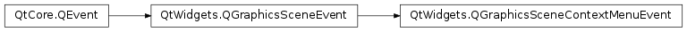

Qt Documentation
QGraphicsSceneContextMenuEvent¶
Synopsis¶
Functions¶
- def
modifiers() - def
pos() - def
reason() - def
scenePos() - def
screenPos() - def
setModifiers(modifiers) - def
setPos(pos) - def
setReason(reason) - def
setScenePos(pos) - def
setScreenPos(pos)
Detailed Description¶
The
PySide2.QtWidgets.QGraphicsSceneContextMenuEventclass provides context menu events in the graphics view framework.A
PySide2.QtGui.QContextMenuEventreceived by aPySide2.QtWidgets.QGraphicsViewis translated into aPySide2.QtWidgets.QGraphicsSceneContextMenuEvent. TheQContextMenuEvent.globalPos()is translated into item, scene, and screen coordinates (PySide2.QtWidgets.QGraphicsSceneContextMenuEvent.pos(),PySide2.QtWidgets.QGraphicsSceneContextMenuEvent.scenePos(), andPySide2.QtWidgets.QGraphicsSceneContextMenuEvent.screenPos()).
-
class
PySide2.QtWidgets.QGraphicsSceneContextMenuEvent([type=None])¶ Parameters: type – PySide2.QtCore.QEvent.TypeConstructs a graphics scene context menu event of the specified
type.
-
PySide2.QtWidgets.QGraphicsSceneContextMenuEvent.Reason¶ This enum describes the reason why the context event was sent.
Constant Description QGraphicsSceneContextMenuEvent.Mouse The mouse caused the event to be sent. On most platforms, this means the right mouse button was clicked. QGraphicsSceneContextMenuEvent.Keyboard The keyboard caused this event to be sent. On Windows and macOS , this means the menu button was pressed. QGraphicsSceneContextMenuEvent.Other The event was sent by some other means (i.e. not by the mouse or keyboard).
-
PySide2.QtWidgets.QGraphicsSceneContextMenuEvent.modifiers()¶ Return type: PySide2.QtCore.Qt.KeyboardModifiersReturns the keyboard modifiers in use when the context menu was requested.
-
PySide2.QtWidgets.QGraphicsSceneContextMenuEvent.pos()¶ Return type: PySide2.QtCore.QPointFReturns the position of the mouse cursor in item coordinates at the moment the context menu was requested.
-
PySide2.QtWidgets.QGraphicsSceneContextMenuEvent.reason()¶ Return type: PySide2.QtWidgets.QGraphicsSceneContextMenuEvent.ReasonReturns the reason for the context menu event.
See also
QGraphicsSceneContextMenuEvent.Reason
-
PySide2.QtWidgets.QGraphicsSceneContextMenuEvent.scenePos()¶ Return type: PySide2.QtCore.QPointFReturns the position of the mouse cursor in scene coordinates at the moment the context menu was requested.
-
PySide2.QtWidgets.QGraphicsSceneContextMenuEvent.screenPos()¶ Return type: PySide2.QtCore.QPointReturns the position of the mouse cursor in screen coordinates at the moment the context menu was requested.
-
PySide2.QtWidgets.QGraphicsSceneContextMenuEvent.setModifiers(modifiers)¶ Parameters: modifiers – PySide2.QtCore.Qt.KeyboardModifiersSets the keyboard modifiers associated with the context menu to the
modifiersspecified.
-
PySide2.QtWidgets.QGraphicsSceneContextMenuEvent.setPos(pos)¶ Parameters: pos – PySide2.QtCore.QPointFSets the position associated with the context menu to the given
pointin item coordinates.
-
PySide2.QtWidgets.QGraphicsSceneContextMenuEvent.setReason(reason)¶ Parameters: reason – PySide2.QtWidgets.QGraphicsSceneContextMenuEvent.ReasonSets the reason for the context menu event to
reason.
-
PySide2.QtWidgets.QGraphicsSceneContextMenuEvent.setScenePos(pos)¶ Parameters: pos – PySide2.QtCore.QPointFSets the position associated with the context menu to the given
pointin scene coordinates.
-
PySide2.QtWidgets.QGraphicsSceneContextMenuEvent.setScreenPos(pos)¶ Parameters: pos – PySide2.QtCore.QPointSets the position associated with the context menu to the given
pointin screen coordinates.
© 2018 The Qt Company Ltd. Documentation contributions included herein are the copyrights of their respective owners. The documentation provided herein is licensed under the terms of the GNU Free Documentation License version 1.3 as published by the Free Software Foundation. Qt and respective logos are trademarks of The Qt Company Ltd. in Finland and/or other countries worldwide. All other trademarks are property of their respective owners.